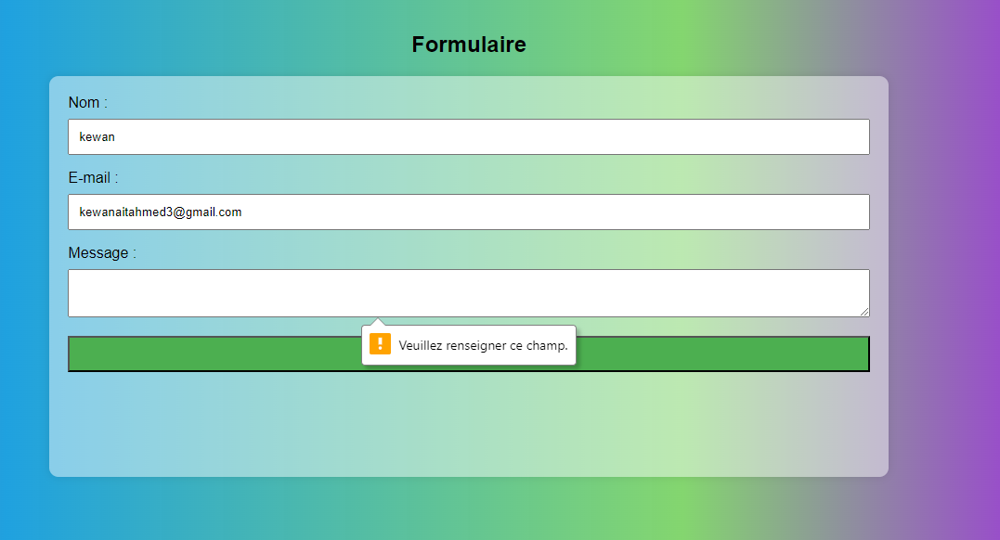
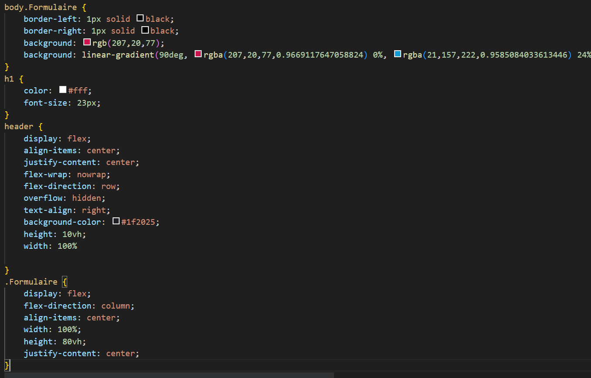

📘 Présentation de la formation
Cette formation m'a permis d'acquérir les compétences fondamentales en HTML5 et CSS3, les langages essentiels pour créer des pages web modernes, responsives et accessibles.
Plateforme : OpenClassRooms - Apprenez à créer votre site web avec HTML5 et CSS3

🎯 Mes objectifs
- Comprendre la structure d'une page web en HTML5
- Maîtriser la mise en forme avec CSS3
- Créer des pages responsives adaptées aux différents appareils
- Appliquer les bonnes pratiques d’accessibilité
- Optimiser la maintenance et la lisibilité du code
❓ Pourquoi cette formation ?
- Compléter mes connaissances en développement web liées au BTS SIO
- Créer des sites web pour mes projets personnels et professionnels
- Acquérir des compétences pratiques demandées en entreprise
- Être capable d’intégrer des maquettes graphiques en HTML/CSS
- Préparer une base solide avant d'apprendre des frameworks avancés
🛠️ Outils utilisés
- Éditeurs de code : Visual Studio Code, Sublime Text
- Navigateur web pour tester et déboguer
- Documentation officielle MDN Web Docs
🖼️ Notions illustrées
HTML5 : Structure sémantique, balises comme <header>, <section>, <footer>, formulaire, tableaux, vidéos.
CSS3 : Sélecteurs, boîte modèle, flexbox, grid, animations simples, media queries pour responsive design.
💼 Compétences développées
- Structurer correctement une page web HTML
- Styliser les contenus avec CSS pour un rendu professionnel
- Adapter le site à tous types d’écrans grâce au responsive design
- Optimiser le code pour la performance et l’accessibilité
- Travailler avec des outils modernes de développement web
✅ Conclusion
Cette certification HTML5-CSS3 m'a offert une base solide pour débuter dans le développement web, essentielle pour mes futurs projets et pour comprendre les technologies web modernes. Elle complète parfaitement ma formation BTS SIO et prépare efficacement à l'intégration en entreprise.